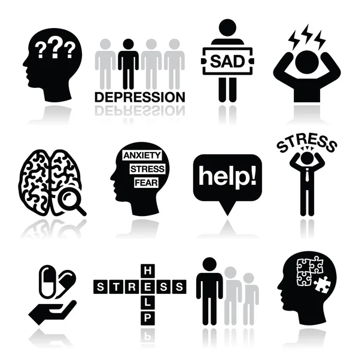
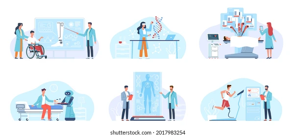

The Benefits of Regular Health Check-ups
Maintaining regular health check-ups is essential for sustaining good
health and catching potential issues before they become serious
concerns. Regular health check-ups play a crucial role in preventive
healthcare. By keeping up with scheduled visits to your healthcare
provider, you can stay ahead of potential health problems, receive
timely medical advice, and ensure overall well-being.
Key Benefits:
-
Early Detection of Health Issues: Regular check-ups help in
identifying health problems at an early stage when they are more
manageable. Early detection can lead to timely intervention and
better outcomes.
-
Monitoring Chronic Conditions: If you have a chronic condition like
diabetes or hypertension, regular visits allow your doctor to
monitor your health closely and make necessary adjustments to your
treatment plan.
-
Promoting a Healthy Lifestyle: Your healthcare provider can offer
personalized advice on lifestyle changes, diet, and exercise to help
you stay healthy.
-
Preventive Screenings: Routine screenings for blood pressure,
cholesterol, and other vital indicators can help detect risk factors
for diseases such as heart disease and cancer.
Conclusion: By investing time in regular health
check-ups, you take a proactive approach to your health, potentially
avoiding serious complications in the future.
Schedule your next check-up today and take a step towards a healthier
life.
Go to top

Understanding Mental Health: Breaking the Stigma
Awareness and education are key to de-stigmatizing mental health and
fostering a more supportive society. Introduction: Mental health is an
integral part of overall well-being, yet it often remains overshadowed
by stigma and misconceptions. Addressing these issues is crucial for
creating a more inclusive and supportive environment.
- Understanding Mental Health:
-
Common Myths and Facts: It's important to debunk myths such
as the misconception that mental illness is a sign of weakness or
that it can't be treated. Understanding that mental health issues
are common and manageable is essential.
-
Importance of Mental Health: Mental health affects every
aspect of our lives, from our relationships and productivity to how
we cope with stress. Maintaining good mental health is as vital as
physical health.
- Breaking the Stigma:
-
Education and Awareness: Promoting mental health education
helps dispel myths and encourages open conversations. Schools,
workplaces, and communities can play a role in providing resources
and support.
-
Seeking Help: One of the best ways to break the stigma is by
normalizing the act of seeking help. Encouraging people to reach out
to mental health professionals without shame or embarrassment is
crucial.
-
Creating Supportive Communities: Building an environment
where individuals feel heard and supported can make a significant
difference. This includes fostering empathy, practicing active
listening, and offering help when needed.
Conclusion: Breaking the stigma around mental health
requires collective effort and a change in societal attitudes. By
being informed and supportive, we can make a positive impact on the
mental well-being of our communities.
Go to top

Advances in Medical Technology: Shaping the Future of Healthcare
Technology is revolutionizing the field of medicine, offering new
possibilities for improving patient care and outcomes.
The landscape of healthcare is rapidly evolving thanks to advancements
in medical technology. From telemedicine to wearable health devices,
these innovations are transforming how we diagnose, treat, and manage
health conditions.
Key Technological Advancements:
-
Telemedicine: Telemedicine has become a game-changer,
especially during the COVID-19 pandemic. It allows patients to
consult with healthcare providers remotely, reducing the need for
in-person visits and increasing access to care.
-
Robotic Surgery: Robotic-assisted surgeries offer greater
precision and control, leading to minimally invasive procedures,
faster recovery times, and reduced post-operative complications.
-
Wearable Health Devices: Devices such as fitness trackers and
smartwatches help individuals monitor their health metrics in
real-time, encouraging proactive management of their well-being.
Impact on Healthcare:
-
Improved Patient Outcomes: Advanced technologies enable more
accurate diagnoses, personalized treatments, and better management
of chronic conditions. This leads to improved patient outcomes and
quality of life.
-
Accessibility: Technological advancements can bridge the gap
in healthcare accessibility, particularly in underserved or remote
areas where traditional healthcare services may be limited.
Conclusion: The future of healthcare lies in
embracing and integrating these technological advancements. As we
continue to innovate, the potential for improving patient care and
outcomes is boundless. Staying informed about these changes is crucial
for both healthcare providers and patients.
Go to top